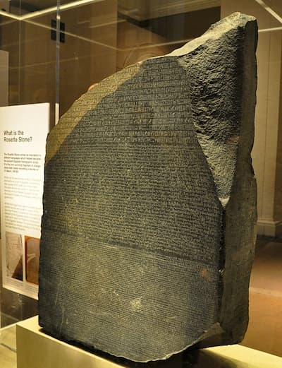

The Mystery of the Hieroglyphs
For centuries, the meaning of Egyptian hieroglyphs remained a mystery. Scholars believed they were mere symbols, until Jean-François Champollion unlocked their phonetic nature through the study of the Rosetta Stone.
Decoding the Language of Ancient Egypt
- Study of the Coptic language: Champollion used Coptic, the last stage of ancient Egyptian, as a key to understanding hieroglyphs.
- Comparison of scripts: He compared the Greek, Demotic, and Hieroglyphic texts on the Rosetta Stone.
- Discovery of phonetic symbols: He proved that hieroglyphs represented sounds, not just ideas.
- Publication: In 1822, he announced his breakthrough in the “Letter to Monsieur Dacier.”
Champollion’s Reflection
"The hieroglyphic system is a complex language where every sign has a sound, a meaning, and a beauty." – Jean-François Champollion